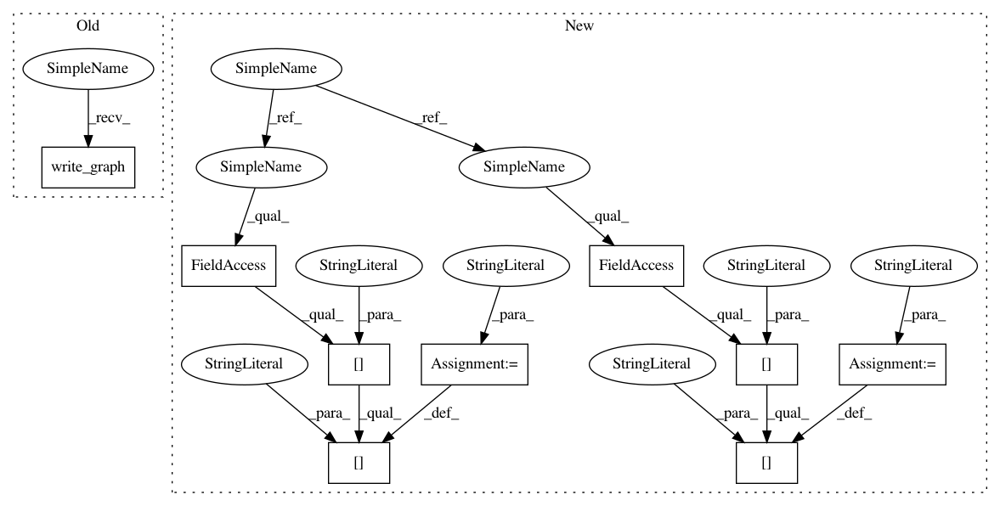

a14ebdd7f5935d387f857986c349686c62678598,pynets/workflows.py,,wb_structural_connectometry,#Any#Any#Any#Any#Any#Any#Any#Any#Any#Any#Any#Any#Any#Any#,511
Before Change
wb_structural_connectometry_wf.config["execution"]["crashdump_dir"]="/tmp"
wb_structural_connectometry_wf.config["execution"]["remove_unnecessary_outputs"]="false"
wb_structural_connectometry_wf.write_graph()
plugin_args = { "n_procs": int(procmem[0]),"memory_gb": int(procmem[1])}
print("\n" + "Running with " + str(plugin_args) + "\n")
res = wb_structural_connectometry_wf.run(plugin="MultiProc", plugin_args= plugin_args)
//res = wb_structural_connectometry_wf.run(plugin="MultiProc")
After Change
import_list=[ "import nibabel as nib", "import nipype.interfaces.fsl as fsl","import nipype.pipeline.engine as pe","import numpy as np","import os","import glob","import seaborn as sns","import random","from nipype.interfaces.fsl import ExtractROI","from matplotlib import pyplot as plt","from sklearn.preprocessing import normalize","from matplotlib import colors","from nilearn import plotting, masking"]
wb_structural_connectometry_wf = pe.Workflow(name="wb_structural_connectometry")
wb_structural_connectometry_wf.base_directory="/tmp/pynets"
////Create input/output nodes
/Ǘ) Add variable to IdentityInterface if user-set
inputnode = pe.Node(niu.IdentityInterface(fields=["ID", "atlas_select", "network", "node_size", "mask", "parlistfile", "plot_switch", "parc", "ref_txt", "procmem", "dir_path", "bedpostx_dir", "label_names", "anat_loc"]), name="inputnode")
/ǘ)Add variable to input nodes if user-set (e.g. inputnode.inputs.WHATEVER)
inputnode.inputs.ID = ID
inputnode.inputs.atlas_select = atlas_select
inputnode.inputs.network = network
inputnode.inputs.node_size = node_size
inputnode.inputs.mask = mask
inputnode.inputs.parlistfile = parlistfile
inputnode.inputs.plot_switch = plot_switch
inputnode.inputs.parc = parc
inputnode.inputs.ref_txt = ref_txt
inputnode.inputs.procmem = procmem
inputnode.inputs.dir_path = dir_path
inputnode.inputs.bedpostx_dir = bedpostx_dir
inputnode.inputs.label_names = label_names
inputnode.inputs.anat_loc = anat_loc
inputnode.inputs.nodif_brain_mask_path = nodif_brain_mask_path
/Ǚ) Add variable to function nodes
////Create function nodes
WB_fetch_nodes_and_labels_node = pe.Node(niu.Function(input_names = ["atlas_select", "parlistfile", "ref_txt", "parc", "func_file"],
output_names = ["label_names", "coords", "atlas_select", "networks_list", "parcel_list", "par_max", "parlistfile", "dir_path"],
function=nodemaker.WB_fetch_nodes_and_labels, imports = import_list), name = "WB_fetch_nodes_and_labels_node")
////Node generation
if mask is not None:
node_gen_node = pe.Node(niu.Function(input_names = ["mask", "coords", "parcel_list", "label_names", "dir_path", "ID", "parc"],
output_names=["net_parcels_map_nifti", "coords", "label_names"],
function=nodemaker.node_gen_masking, imports = import_list), name = "node_gen_masking_node")
else:
node_gen_node = pe.Node(niu.Function(input_names = ["coords", "parcel_list", "label_names", "dir_path", "ID", "parc"],
output_names=["net_parcels_map_nifti", "coords", "label_names"],
function=nodemaker.node_gen, imports = import_list), name = "node_gen_node")
prepare_masks_node = pe.Node(niu.Function(input_names = ["bedpostx_dir", "anat_loc"],
output_names=["WM_diff_mask_path", "vent_CSF_diff_mask_path"],
function=diffconnectometry.prepare_masks, imports = import_list), name = "prepare_masks_node")
grow_nodes_node = pe.Node(niu.Function(input_names = ["bedpostx_dir", "coords", "node_size", "parc", "parcel_list", "net_parcels_map_nifti", "network"],
output_names=["seeds_text", "probtrackx_output_dir_path"],
function=diffconnectometry.grow_nodes, imports = import_list), name = "grow_nodes_node")
run_probtrackx2_node = pe.Node(niu.Function(input_names = ["i", "seeds_text", "bedpostx_dir", "probtrackx_output_dir_path", "vent_CSF_diff_mask_path", "WM_diff_mask_path", "procmem"],
output_names=["max_i"],
function=diffconnectometry.run_probtrackx2, imports = import_list), name = "run_probtrackx2_node")
run_probtrackx2_iterables = []
iter_i = range(int(procmem[0]))
run_probtrackx2_iterables.append(("i", iter_i))
run_probtrackx2_node.iterables = run_probtrackx2_iterables
collect_struct_mapping_outputs_node = pe.Node(niu.Function(input_names = ["parc", "bedpostx_dir", "network", "ID", "probtrackx_output_dir_path", "max_i"],
output_names=["conn_matrix", "conn_matrix_symm", "est_path_struct"],
function=diffconnectometry.collect_struct_mapping_outputs, imports = import_list), name = "collect_struct_mapping_outputs_node")
structural_plotting_node = pe.Node(niu.Function(input_names = ["conn_matrix", "conn_matrix_symm", "label_names", "atlas_select", "ID", "bedpostx_dir", "network", "parc", "plot_switch", "coords"],
function=plotting.structural_plotting, imports = import_list), name = "structural_plotting_node")
outputnode = pe.Node(niu.Function(function=utils.output_echo, input_names=["est_path_struct"], output_names=["est_path_struct"]), name="outputnode")
////Connect nodes of workflow
wb_structural_connectometry_wf.connect([
(inputnode, WB_fetch_nodes_and_labels_node, [("atlas_select", "atlas_select"),
("parlistfile", "parlistfile"),
("parc", "parc"),
("ref_txt", "ref_txt")]),
(inputnode, node_gen_node, [("ID", "ID"),
("mask", "mask"),
("parc", "parc"),
("ref_txt", "ref_txt"),
("atlas_select", "atlas_select"),
("parlistfile", "parlistfile")]),
(inputnode, WB_fetch_nodes_and_labels_node, [("nodif_brain_mask_path", "func_file")]),
(WB_fetch_nodes_and_labels_node, node_gen_node, [("coords", "coords"),
("label_names", "label_names"),
("dir_path", "dir_path"),
("parcel_list", "parcel_list"),
("par_max", "par_max"),
("networks_list", "networks_list")]),
(WB_fetch_nodes_and_labels_node, grow_nodes_node, [("parcel_list", "parcel_list")]),
(node_gen_node, grow_nodes_node, [("net_parcels_map_nifti", "net_parcels_map_nifti")]),
(inputnode, prepare_masks_node, [("bedpostx_dir", "bedpostx_dir"),
("anat_loc", "anat_loc")]),
(WB_fetch_nodes_and_labels_node, grow_nodes_node, [("coords", "coords")]),
(inputnode, grow_nodes_node, [("bedpostx_dir", "bedpostx_dir"),
("node_size", "node_size"),
("parc", "parc"),
("network", "network")]),
(inputnode, run_probtrackx2_node, [("bedpostx_dir", "bedpostx_dir"),
("procmem", "procmem")]),
(prepare_masks_node, run_probtrackx2_node, [("vent_CSF_diff_mask_path", "vent_CSF_diff_mask_path"),
("WM_diff_mask_path", "WM_diff_mask_path")]),
(grow_nodes_node, run_probtrackx2_node, [("seeds_text", "seeds_text"),
("probtrackx_output_dir_path","probtrackx_output_dir_path")]),
(grow_nodes_node, collect_struct_mapping_outputs_node, [("probtrackx_output_dir_path","probtrackx_output_dir_path")]),
(inputnode, collect_struct_mapping_outputs_node, [("bedpostx_dir", "bedpostx_dir"),
("node_size", "node_size"),
("parc", "parc"),
("network", "network"),
("ID", "ID")]),
(run_probtrackx2_node, collect_struct_mapping_outputs_node, [("max_i", "max_i")]),
(collect_struct_mapping_outputs_node, structural_plotting_node, [("conn_matrix", "conn_matrix"),
("conn_matrix_symm", "conn_matrix_symm")]),
(inputnode, structural_plotting_node, [("label_names", "label_names"),
("atlas_select", "atlas_select"),
("ID", "ID"),
("bedpostx_dir", "bedpostx_dir"),
("network", "network"),
("parc", "parc"),
("plot_switch", "plot_switch")]),
(WB_fetch_nodes_and_labels_node, structural_plotting_node, [("coords", "coords")]),
(collect_struct_mapping_outputs_node, outputnode, [("est_path_struct", "est_path_struct")]),
])
wb_structural_connectometry_wf.config["execution"]["crashdump_dir"]="/tmp"
wb_structural_connectometry_wf.config["logging"]["log_directory"]="/tmp"
wb_structural_connectometry_wf.config["logging"]["workflow_level"]="DEBUG"
wb_structural_connectometry_wf.config["logging"]["utils_level"]="DEBUG"
wb_structural_connectometry_wf.config["logging"]["interface_level"]="DEBUG"
//wb_structural_connectometry_wf.config["execution"]["plugin"]="MultiProc"
//wb_structural_connectometry_wf.write_graph()
//plugin_args = { "n_procs": int(procmem[0]),"memory_gb": int(procmem[1])}
//print("\n" + "Running with " + str(plugin_args) + "\n")
In pattern: SUPERPATTERN
Frequency: 4
Non-data size: 9
Instances
Project Name: dPys/PyNets
Commit Name: a14ebdd7f5935d387f857986c349686c62678598
Time: 2018-01-01
Author: dpisner@utexas.edu
File Name: pynets/workflows.py
Class Name:
Method Name: wb_structural_connectometry
Project Name: dPys/PyNets
Commit Name: a14ebdd7f5935d387f857986c349686c62678598
Time: 2018-01-01
Author: dpisner@utexas.edu
File Name: pynets/workflows.py
Class Name:
Method Name: rsn_structural_connectometry
Project Name: dPys/PyNets
Commit Name: a14ebdd7f5935d387f857986c349686c62678598
Time: 2018-01-01
Author: dpisner@utexas.edu
File Name: pynets/workflows.py
Class Name:
Method Name: wb_functional_connectometry
Project Name: dPys/PyNets
Commit Name: a14ebdd7f5935d387f857986c349686c62678598
Time: 2018-01-01
Author: dpisner@utexas.edu
File Name: pynets/workflows.py
Class Name:
Method Name: wb_structural_connectometry
Project Name: dPys/PyNets
Commit Name: a14ebdd7f5935d387f857986c349686c62678598
Time: 2018-01-01
Author: dpisner@utexas.edu
File Name: pynets/workflows.py
Class Name:
Method Name: rsn_functional_connectometry